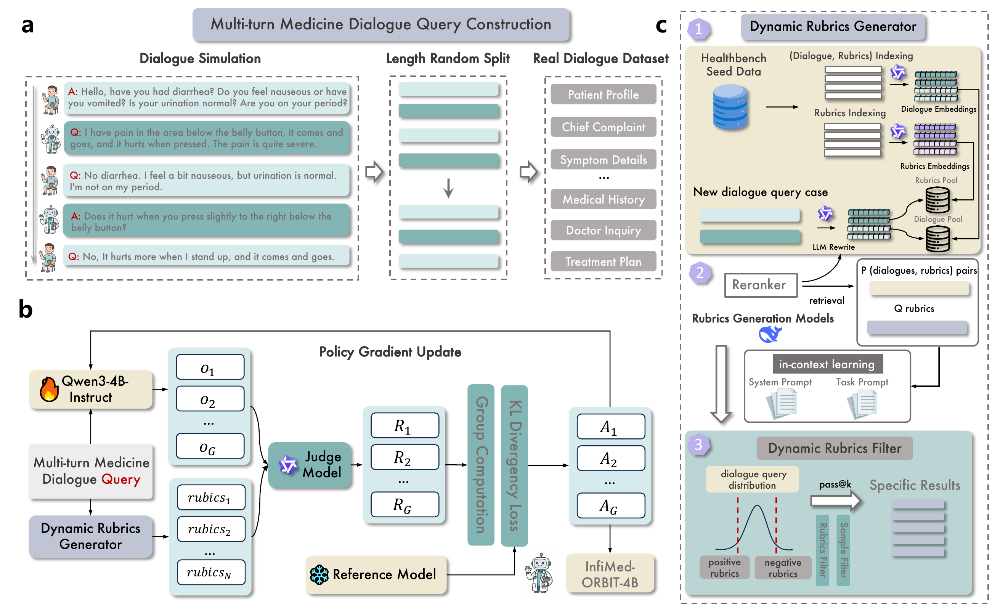
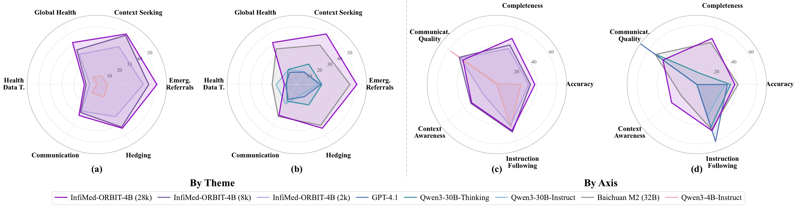
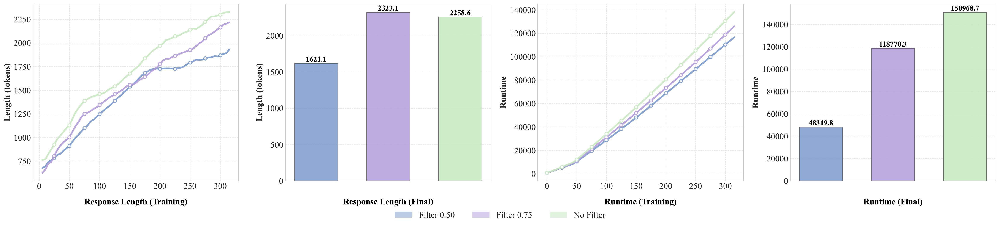
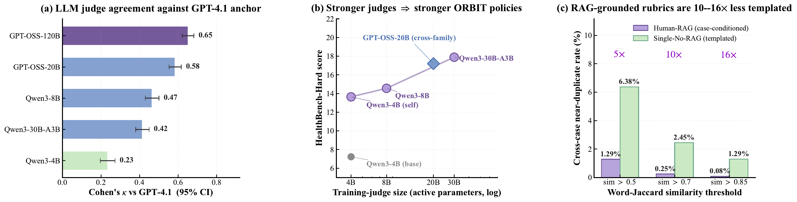

InfiMed-ORBIT
Aligning LLMs on Open-Ended Complex Tasks via Rubric-Based Incremental Training
The Hong Kong Polytechnic University · InfiX.ai · Ant Group · Zhejiang University
* Equal contribution. † Corresponding author.

Overview
Reinforcement learning has driven recent breakthroughs in large language models, but it is still difficult to apply reliably to open-ended medical dialogue, where feedback is ambiguous, context-dependent, and hard to collapse into a single scalar reward. ORBIT addresses this challenge with a rubric-based incremental training framework that uses retrieval-augmented, case-specific rubrics as adaptive guides for reinforcement learning.
Applied to Qwen3-4B-Instruct, ORBIT improves HealthBench-Hard performance from 7.0 to 27.5 using only 2k training samples, achieving state-of-the-art performance among comparable-size open-source models. Larger rubric sets remain competitive with strong open-source baselines, while judge agreement and rubric-quality analyses stress-test the reliability of the reward signal.
Main Results
The headline HealthBench-Hard comparison uses GPT-4.1 for evaluation. ORBIT is positioned as a compact-model post-training method: it does not rely on proprietary model scale, but instead improves the reward structure used during alignment.

Training Dynamics
Scaling training data and filtering training examples play different roles. Larger rubric pools raise the performance ceiling, while difficulty-aware pruning improves sample efficiency by focusing optimization on informative cases and constraints.

Judge Model Consistency
We evaluate whether different judge models produce consistent rubric-based scores. On a fixed set of RAG-generated rubrics, six LLM judges are compared against a GPT-4.1 anchor, providing a direct check that the development-time evaluator is calibrated with the headline evaluation protocol.

Resources
The project page is the stable entry point for the paper and upcoming open-source release. Code and data links will be updated here once the release package is finalized.
Citation
@misc{wang2025infimedorbitaligningllmsopenended,
title={InfiMed-ORBIT: Aligning LLMs on Open-Ended Complex Tasks via Rubric-Based Incremental Training},
author={Pengkai Wang and Pengwei Liu and Qi Zuo and Zhijie Sang and Congkai Xie and Hongxia Yang},
year={2025},
eprint={2510.15859},
archivePrefix={arXiv},
primaryClass={cs.CL},
url={https://arxiv.org/abs/2510.15859},
}